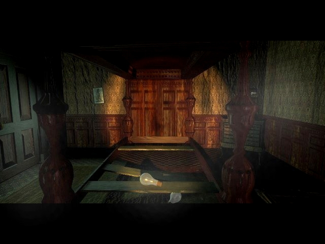

"We're very happy."
Don't recognize the quote? Try the easter egg mentioned in the lab. This page contains some food for thought by Daniel Nolan, I comment on his comments. If you want to comment on my comments about his comments. Comment me here. On with the show. Take it away Daniel...
Did you
ever wonder why....
- Chuck, after walking out a motel room door with a body wrapped in sheets flipped over his shoulder with blood pertruding from the wounds of the stabbing, went un-noticed as he stumbled through the car-park, to where his car was parked far from Robin's motel room?
- The head of the dog in the scene with Marie in the library was not actually Stauf? Evidently, it is the head of the motel clerk in the reception scene.(Comment Bones: Who said that it had to be Stauf's head?)
- The door in the Chapel that originally lead to the lab in the 7th Guest now leads back to Dutton's room, and the other door vice versa? Either they screwed up on the sequel, or Henry did some remodelling to confuse veteran players of the prequel.
- Julia Heine is the maiden of horror in Chuck Roast? Take a look closer, and you will see the resemblence between she, and her former character in The 7th Guest. (Comment Bones: Maybe she still is Heine, Knox made a cameo as Knox, so did Dutton)
- When you find an object in the house, and a video sequence is activated that Carl (yourself)features in, the scene does not take place in the room you are currently in? Sometimes the scenes take place on opposite sides of the house! (Comment Bones: Is that a crime? Some scenes happen outside the house, but you can't visit doc Thorton's office. I don't think that Trilobyte ever wanted to match scenes with the objects.)
- There is only one door in the bathroom, but there appears to be two entrances? One from Edward/Elinor's former room, and the other from the hallway.
- In the 7th Guest, the house is located on a grassy knoll, but in this sequel, it sits on a large, flat plain? (Comment Bones: Try to find a huge mansion on such a hill, I'm happy that they found something that looked remotely like the picture of the seventh guest cover.)
- Or perhaps, who, is the ominous skeleton in the bathtub? Many claim it's Martine Burden's restplace. Although she makes a cameo guest appearance as the tramp in this sequel, she drowned in the bath in the predecessor of unusual circumstances. (Comment Bones: Why, it's me. Little old Bones taking a bath. ;-)
- Stauf's house seems to be filled with things other than antique furniture? For example, you'll find a television in Dutton's room, a modern painting in the gallery, a telephone in the foyer, just to name a few. (Comment Bones: I don't see anything wrong with that.)
- Carl has a book on Oregon in a convenient store-file in the first scene in Denning's house? It is common knowledge that the game was shot and produced in the state, but why would he care about a place so similar to Connecticut? (no offence, Oregonians)(Comment Bones: I don't understand what Daniel means.)
- When Chuck dumps Jim's body in the house, apart from an erroneous sound effect, why it looks like he's shoving a thick quilt through the door? Whoops....I think the body must have slipped out when he was carrying that long wide load through the car park.
If you want to go to the chapel, click here .